NEWSNews & events新闻动态
News & events新闻动态
105 stories from the group since 2019 — conferences, beam tests, workshops, people and papers.自2019年以来的105条课题组动态——会议、束流测试、研讨会、成员与论文。
-
μ
NuFact 2026: The 27th International Workshop on Neutrinos from Accelerators, hosted at TDLI
From 31 August to 5 September 2026, our group hosted NuFact 2026, the 27th International Workshop on Neutrinos from Accelerators , at the Tsung-Dao Lee Institute in Shanghai. The w
-
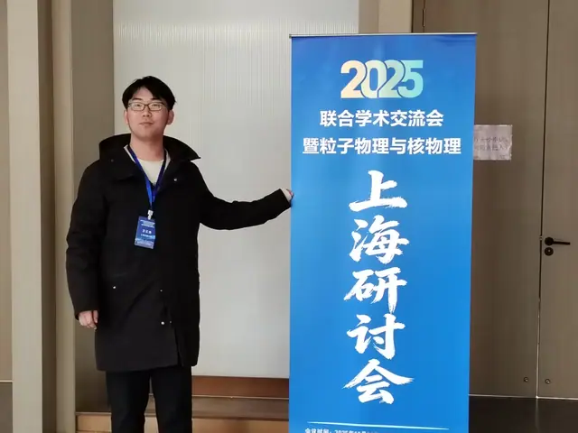
2025年粒子物理与核物理上海研讨会
Jiangtao Wang recently participated in the Particle Physics and Nuclear Physics Shanghai Symposium 2025, held at the University of Shanghai for Science and Technology (上海理工大学) from
-
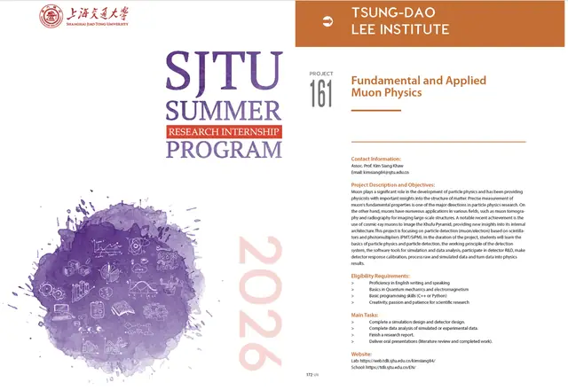
SJTU Summer Research Internship Program 2026
We are accepting students for the SJTU Summer Research Internship this summer! Our project is Fundamental and Applied Muon Physics, which covers the measurement of muon properties
-
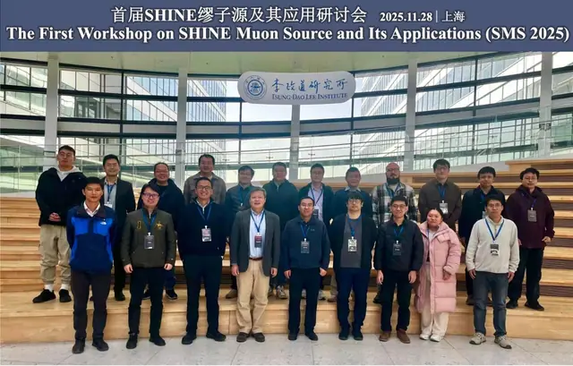
The First Workshop on SHINE Muon Source and Its Applications (SMS 2025)
On November 28, 2025, the First Workshop on SHINE Muon Source and Its Applications (SMS 2025) was successfully held at the Tsung-Dao Lee Institute (TDLI), Shanghai Jiao Tong Univer
-
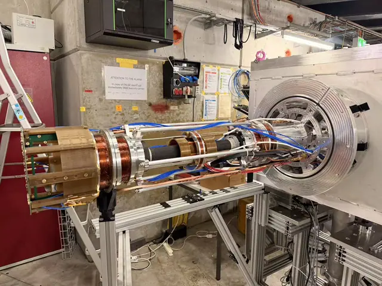
Test Beam 2025 at PSI for the Muon Trigger Detector
Our team recently took part in a test beam at PSI in December 2025 to evaluate the performance of the upgraded muon trigger detector developed for the muEDM experiment. This was ou
-
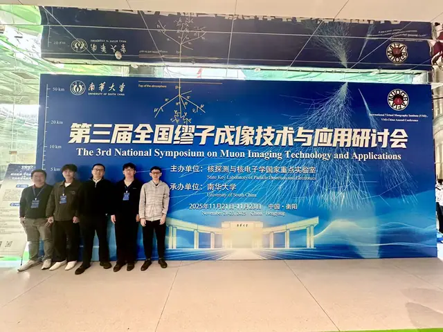
The 3rd National Muography Workshop 第三届全国缪子成像技术与应用研讨会
Our group recently participated in the 3rd National Muography Workshop (第三届全国缪子成像技术与应用研讨会) , held at the University of South China (USC) in Hengyang (衡阳) from November 22 to 23, 20
-
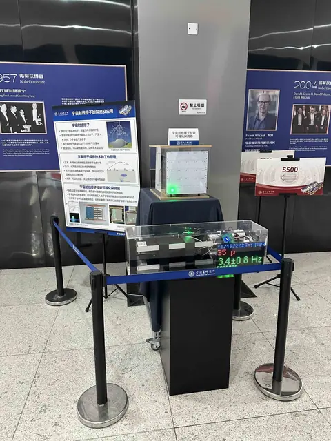
Muon Track Visualizer and Muon Flux Monitor are currently on display at TDLI!
-
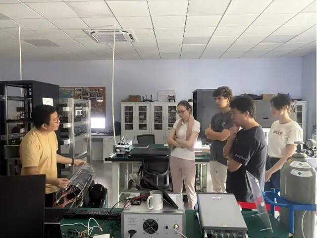
7 Summer Research Interns Completed Their Work in Our Group
This summer, the Muon Physics Group at the Tsung-Dao Lee Institute (TDLI) had the pleasure of hosting seven talented students from around the world for internship projects under th
-
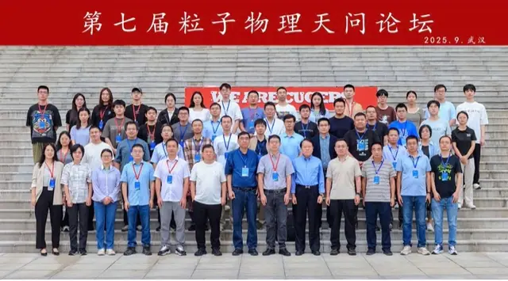
The 7th Tianwen Forum on Particle Physics (第七届粒子物理天问论坛)
From September 18 to 22, 2025, the 7th Tianwen Forum on Particle Physics (第七届粒子物理天问论坛) was held at China University of Geosciences in Wuhan. Co-hosted by several universities, incl
-
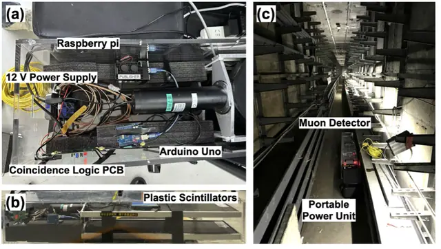
Our paper on the Shanghai Outer Ring Tunnel Muography is out!
We are thrilled to announce that our latest research paper, “Towards Non-Invasive Sediment Monitoring Using Muography: A Pilot Run at the Shanghai Outer Ring Tunnel,” has been publ
-
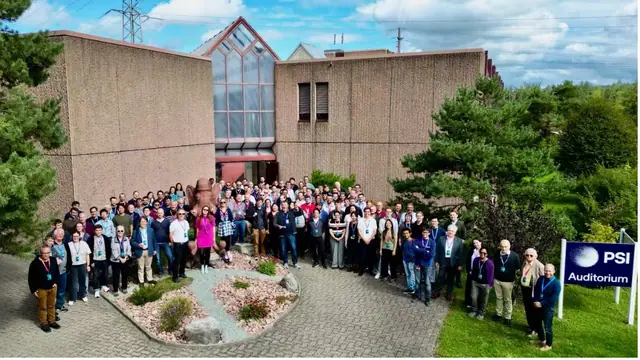
Physics of Fundamental Symmetries and Interactions (PSI 2025)
Beining Rao from our group recently participated in the Physics of Fundamental Symmetries and Interactions – PSI2025 workshop (September 7–12, 2025, Paul Scherrer Institute, Switze
-
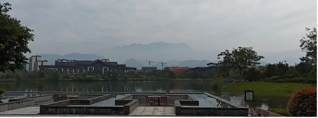
Particle Physics on Tabletops (PPTT 2025)
Members of our group recently participated in the PPTT 2025 workshop, held in Dujiangyan, Chengdu, from 1 to 6 September 2025. The workshop, on Particle Physics on Tabletops, broug
-
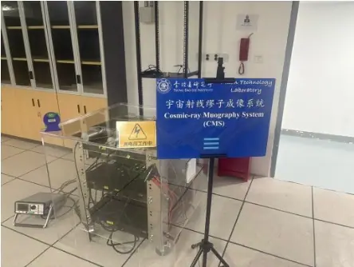
Cosmic-ray Muography System (CMS) Now Online and Begins First Muon Radiography Measurements at TDLI
The Cosmic-ray Muography System (CMS), developed by the TDLI Muon Physics Group, is now online and has begun taking data in radiography mode. The system consists of three tracking
-
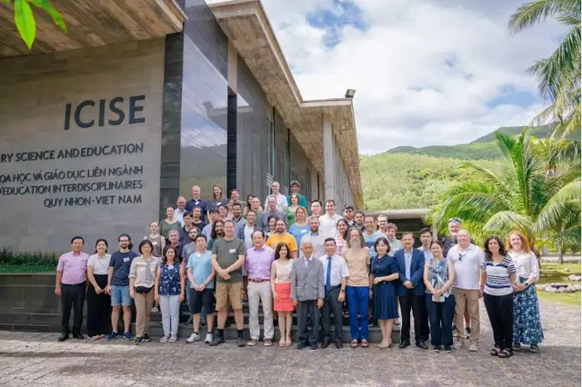
The Flavor Physics Conference 2025: A Gathering of Minds in Particle Physics
The Flavor Physics Conference is held every three years, bringing together particle physicists from around the world to discuss the latest developments, challenges, and future dire
-
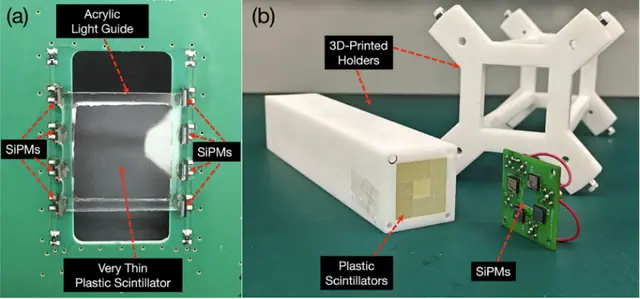
Fast Muon Trigger System Prototype Readied for PSI’s muEDM Experiment
Two new studies mark key milestones toward the world’s most sensitive search for the muon electric dipole moment.
-

Final results from the Muon g-2 experiment at Fermilab
The Fermilab Muon g-2 experiment announced its final results at 11:00 PM Beijing time on June 3. The new measurement agrees closely with the results published in 2021 and 2023 and
-
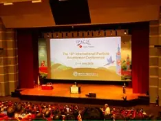
The 16th International Particle Accelerator Conference (IPAC’25)
Dr. Yusuke Takeuchi recently attended the 16th International Particle Accelerator Conference (IPAC’25) , held in Taipei from June 1 to 6, 2025. IPAC is the largest conference in th
-
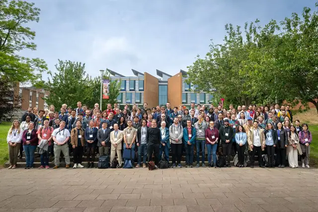
The 30th International Workshop on Weak Interactions and Neutrinos (WIN 2025)
From June 9 to 13, 2025, the 30th International Workshop on Weak Interactions and Neutrinos (WIN 2025) was held at the University of Sussex, UK. One of the prominent conferences in
-
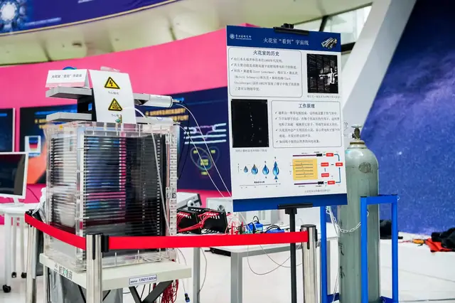
Open Lab Day at TDLI 2025
We’re proud to have joined the 2025 Open Lab Day— “Touching the Invisible Dimensions of the Universe” —hosted by our institute in Zhangjiang. Our team (Jiangtao, Jun Kai, Xingyun,
-
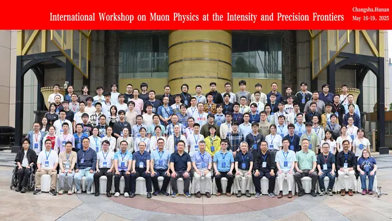
International Workshop on Muon Physics at the Intensity and Precision Frontiers (MIP2025)
Our group recently participated in the MIP2025 workshop, held at Hunan University in Changsha from May 17 to 19. Kim Siang chaired the muon bound-state session, while three group m
-
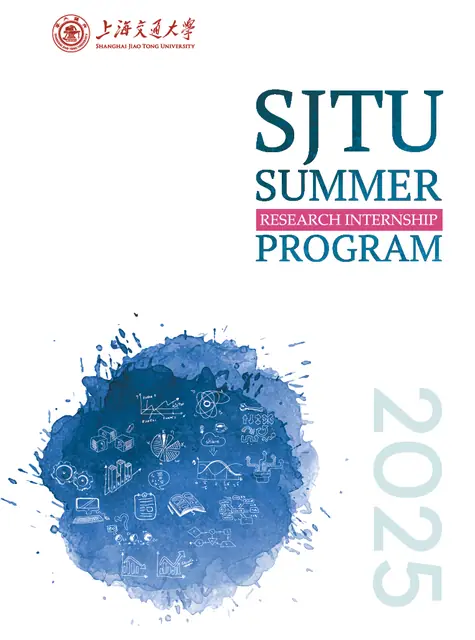
SJTU Summer Research Internship Program 2025
We are accepting students for the SJTU Summer Research Internship this summer! Our project is Fundamental and Applied Muon Physics: measurement of muon properties using tabletop ex
-
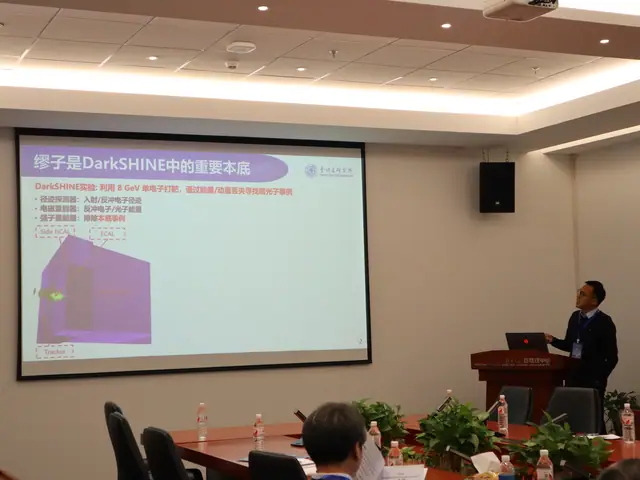
基于SHINE高能强流极化电子束的粒子物理核物理平台建设研讨会
Kim Siang recently participated in the Workshop on the Development of a Particle and Nuclear Physics Platform Based on SHINE’s High-Energy, High-Current Polarized Electron Beam, he
-
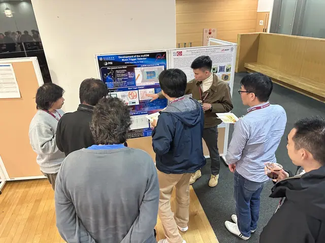
QUP 2025 Workshop
Kim Siang and Guan Ming participated in the QUP 2025 workshop, held at KEK, Japan, on April 8–10, 2025. QUP stands for the International Center for Quantum-field Measurement System
-
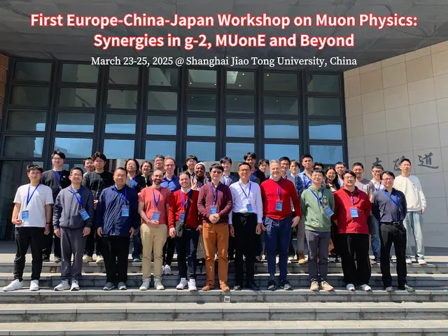
1st Europe-China-Japan Workshop on Muon Physics
Our group participated in the 1st Europe-China-Japan Workshop on Muon Physics , held at the Minhang campus of Shanghai Jiao Tong University on 24–25 March 2025. Kim Siang gave a ta
-
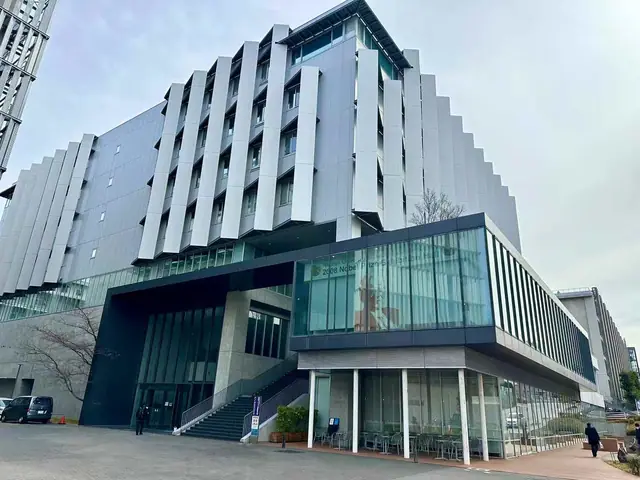
The 6th KMI International Symposium (KMI2025)
Kim Siang was invited to present the current status of the Fermilab Muon g-2 and PSI muEDM experiments at the 6th KMI International Symposium – “Quest for the Origin of Particles a
-
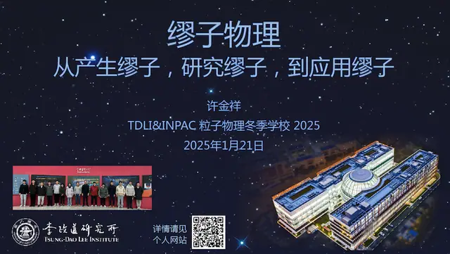
TDLI & INPAC Winter School in Particle Physics 2025
Kim Siang was a lecturer at the TDLI & INPAC Winter School in Particle Physics 2025 (January 20–24, 2025, Shanghai). The school was aimed at undergraduate students interested in pa
-
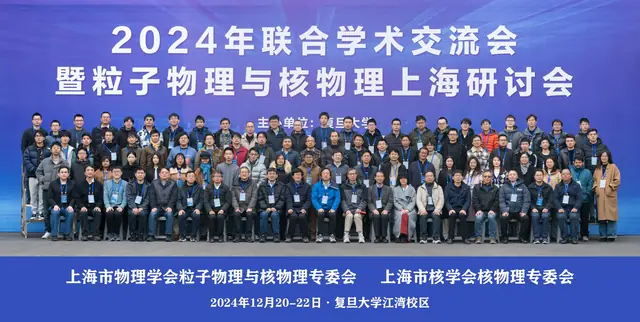
2024年粒子物理与核物理上海研讨会
Dr. Siew Yan Hoh recently participated in the Particle Physics and Nuclear Physics Shanghai Symposium 2024, held at Fudan University from December 20 to 22. Representing the Muon P
-
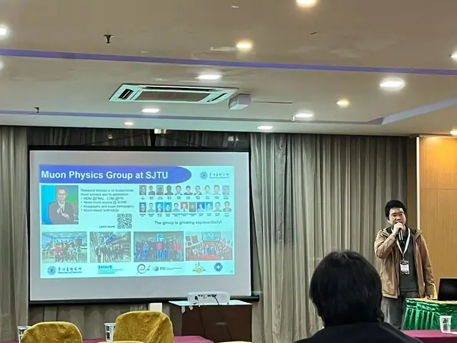
National Physics Conference of Malaysia (PERFIK 2024)
Hoh Siew Yan recently participated in the National Physics Conference 2024 (PERFIK 2024) , held in Malaysia from November 3 to 8, 2024. Representing the group, Hoh gave two present
-
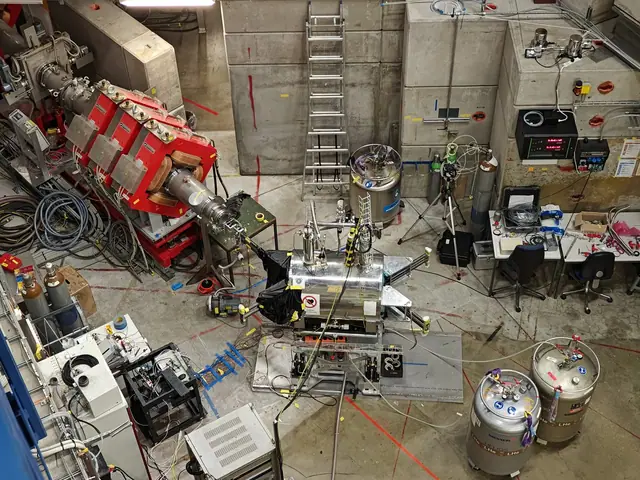
Test beam at PSI for muon trigger detector
From late October to early November 2024, our group took part in a test beam campaign at PSI to evaluate the performance of the prototype muon trigger detector developed for the mu
-
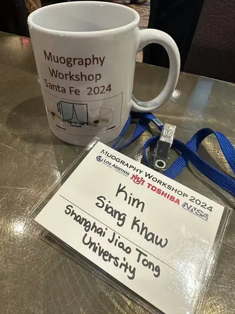
Muography Workshop 2024
Kim Siang recently participated in the Muography Workshop 2024, held in Santa Fe, New Mexico, USA, from November 4–8. He presented the latest progress of the Shanghai Muography Pro
-
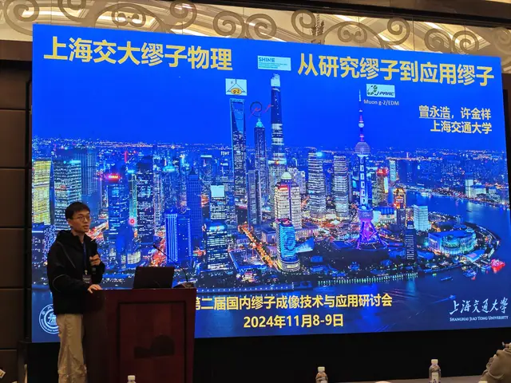
Chinese Muography Workshop 2024
Yonghao recently participated in the Chinese Muography Workshop 2024, hosted by the University of Science and Technology of China (USTC) in Hefei from November 7 to 9, 2024. Repres
-
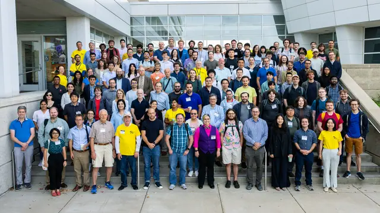
NuFact 2024: The 25th International Workshop on Neutrinos from Accelerators
Kim Siang participated in the NuFact 2024 conference (September 16–21) at Argonne National Laboratory, both as a convener of Working Group 4 (Muon Physics) and as a speaker on the
-
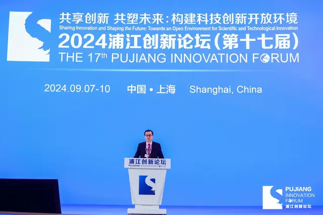
浦江创新论坛2024
9月7日， 2024浦江创新论坛（第十七届） 在上海张江科学会堂开幕，并持续至9月10日。论坛主题为“共享创新 共塑未来：构建科技创新开放环境”。主宾国匈牙利总统舒尤克·道马什向论坛致贺信。上海市委书记陈吉宁出席开幕式并致辞，中国科学技术协会主席万钢、科技部部长阴和俊作主旨演讲。上海市委副书记、市长龚正主持开幕式。本届论坛邀请了300余位来自国际组织、顶尖高
-
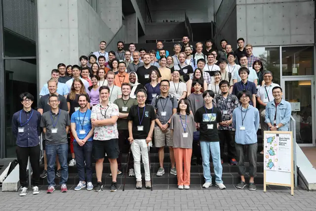
Simon Eidelman School on Muon Dipole Moments and Hadronic Effects
Our group actively participated in the prestigious Simon Eidelman School on Muon Dipole Moments and Hadronic Effects, hosted by the Kobayashi-Maskawa Institute at Nagoya University
-
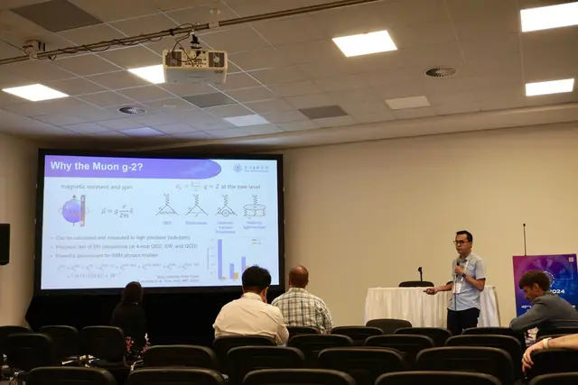
ICHEP 2024: 42nd International Conference on High Energy Physics
Kim Siang recently participated in the ICHEP 2024 conference (July 17–24) at the Prague Congress Centre in Prague, Czech Republic. Representing the Fermilab Muon g-2 collaboration,
-
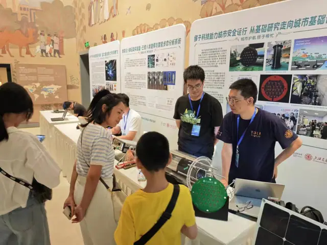
Exhibition at the Shanghai Natural History Museum
Our group recently took part in an exhibition showcasing science and technology (S&T) innovations from Shanghai Jiao Tong University (SJTU). The exhibition was specially arranged t
-
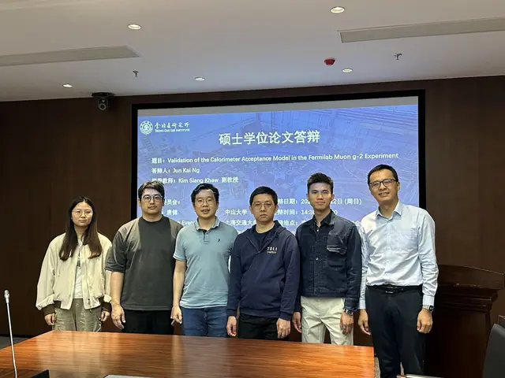
Jun Kai NG successfully defends his Master’s thesis
Jun Kai NG (黄俊凯) successfully defended his Master’s thesis, “Validation of the Calorimeter Acceptance Model in the Fermilab Muon g-2 Experiment”, on 12 May 2024. The whole team con
-
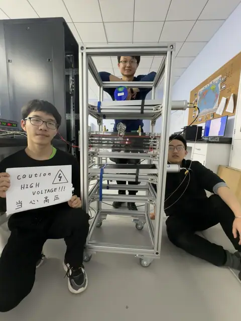
Yimin Wan and Xingyun Huang have successfully defended their Bachelor’s theses
Yimin Wan (万一民) and Xingyun Huang (黄幸运) successfully defended their Bachelor’s theses on 4 June 2024. They worked on “Design and Construction of Spark Chamber Frame Structure, Gas
-
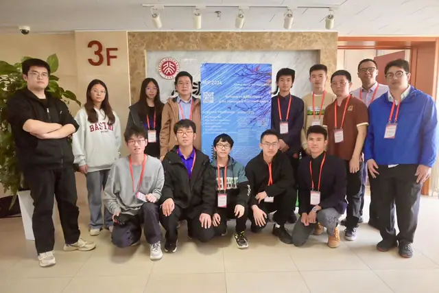
Workshop on Muon Physics at the Intensity and Precision Frontiers (MIP2024)
Our group recently participated in the MIP2024 workshop at Peking University, Beijing, on April 20–21, 2024. Kim Siang chaired the precision measurement session, while three group
-
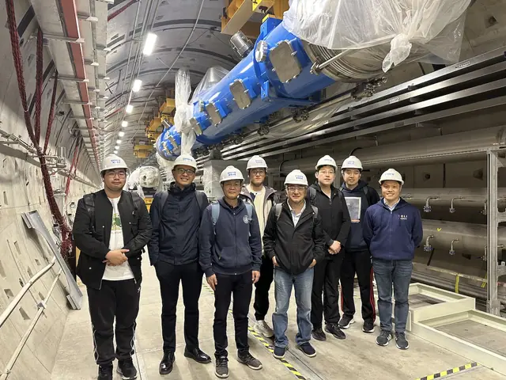
SHINE电子束流科学应用与关键技术研讨会
Our group recently participated in the Workshop on Scientific Applications and Key Technologies of the SHINE Electron Beam (SHINE电子束流科学应用与关键技术研讨会) on April 1–2. Kim Siang gave a ta
-
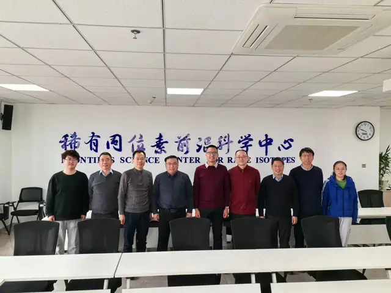
Lanzhou Trip for Muon Physics Exchange
On March 3–4, Kim Siang visited Lanzhou for the first time for an academic exchange on muography with Prof. Zhiyi Liu’s group, accompanied by several officials from the Shanghai go
-
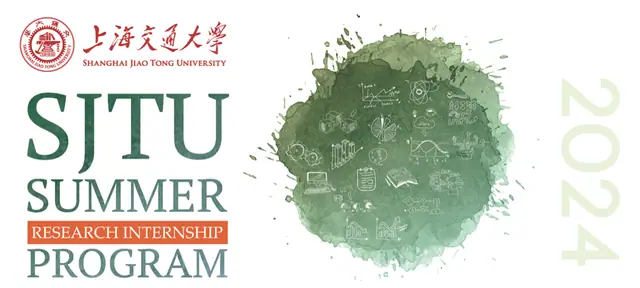
SJTU Summer Research Internship Program 2024
We are accepting students for the SJTU Summer Research Internship this summer! Our project is the measurement of muon properties using tabletop setups in our laboratory at the Tsun
-
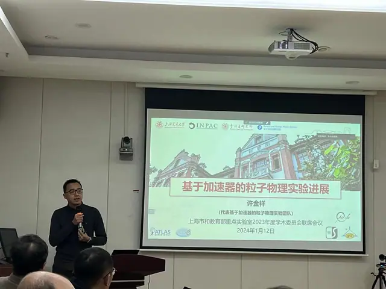
上海市和教育部重点实验室2023年度学术委员会联席会议
Kim Siang represented the accelerator-based particle physics experimental group in the annual report to the Key Laboratory of Shanghai and the MOE. In his presentation, he describe
-
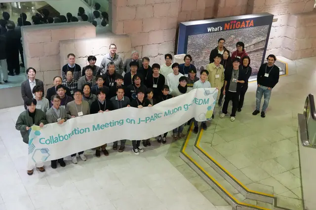
27th J-PARC Muon g-2/EDM collaboration meeting at Niigata University
Meng attended the 27th J-PARC Muon g-2/EDM Collaboration Meeting at Niigata University and gave a talk on the status of the muon polarization monitor. Exchanges between the Shangha
-
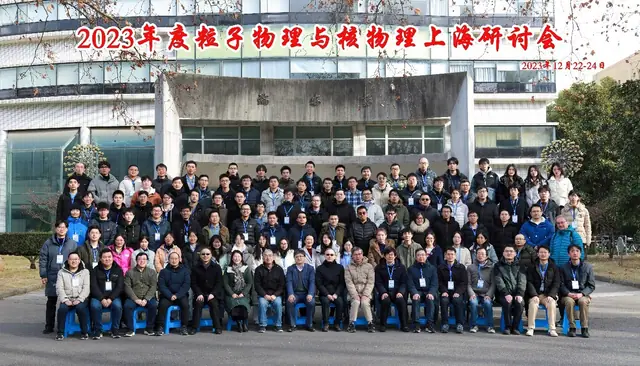
2023年粒子物理与核物理上海研讨会
Kim Siang and Tianqi gave talks on the Shanghai Muon Source and the PSI muEDM experiment at the Shanghai Particle and Nuclear Physics Annual Meeting, held at Tongji University. It
-
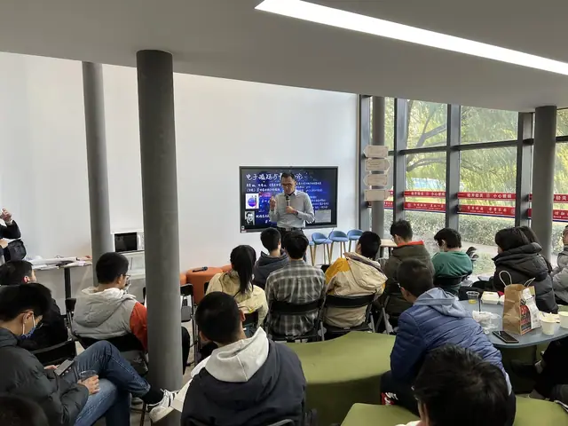
《致交论道》Dec 2023
Kim Siang was invited to speak at the 《致交论道》 event organized by Zhiyuan College, SJTU. The topic of discussion was “What is the new physics behind the N-th decimal place?”
-
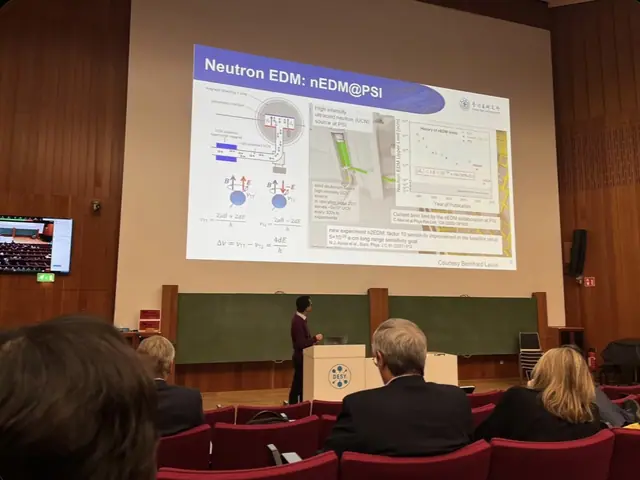
ICFA Seminar 2023
Kim Siang was recently invited to give an overview talk on electromagnetic dipole moments at the ICFA Seminar 2023 on “Future Perspectives in High-Energy Physics”, held at DESY in
-
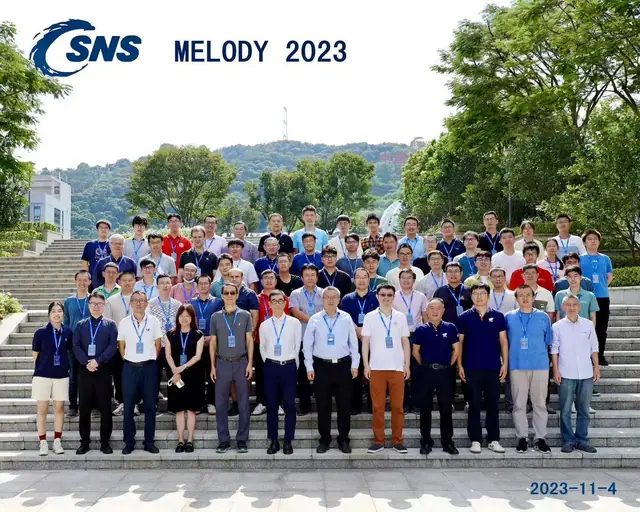
MELODY 2023
Our group recently participated in the first Workshop on Muon Science Technology and Industry (MELODY 2023), held from 3 to 6 November 2023 at the China Spallation Neutron Source (
-
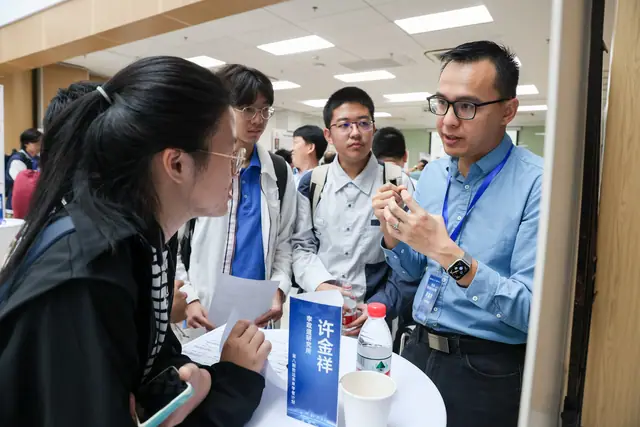
Faculty-student exchange session at the Zhiyuan Innovative Research Center (ZIRC) 2024
On Oct 25, 2023, Kim-Siang presented a poster on “Precise measurements of muon properties and muon factory” at the faculty-student exchange session (2024年“致远学者研究计划”师生交流会) of the Zh
-
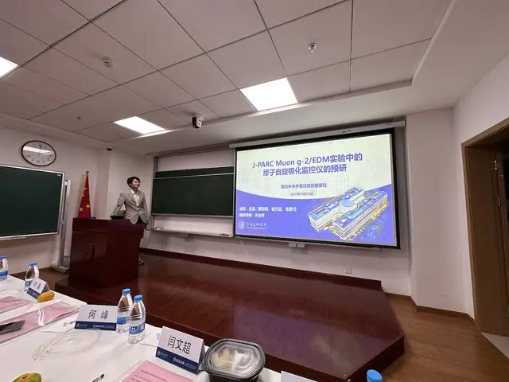
第六期致远未来学者项目(中期)汇报会
Meng successfully defended the team’s Zhiyuan Scholar project at the annual report meeting. Congratulations to the team (Meng Lyu, Xintong Cai, Fangyuan Yu and Siyuan Chen) on comp
-
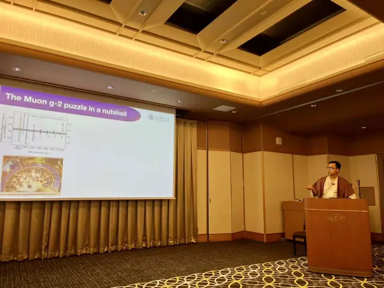
The 3rd Asian-European-Institutes Workshop for BSM
Kim Siang was invited to present the latest results of the Fermilab Muon g-2 experiment at the 3rd Asian-European-Institutes (AEI) Workshop for BSM, held from 3 to 6 October 2023 a
-
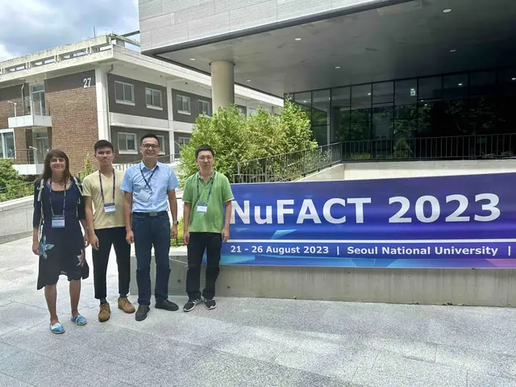
NuFact 2023: The 24th International Workshop on Neutrinos from Accelerators
Our group participated in the NuFact 2023 workshop at Seoul National University, giving technical talks on the Fermilab Muon g-2 experiment (Kim Siang) and the PSI muEDM experiment
-
Muon g-2 Physics Week at Liverpool 2023
Kim Siang attended the Muon g-2 collaboration’s Physics Week in Liverpool, his first in-person Physics Week since joining TDLI in 2019. He presented the current status of the SJTU
-
SUT-PSI School of Muon and Neutron Physics
From July 10 to 14, our young research team had the privilege of attending the SUT-PSI School of Muon and Neutron Physics , hosted by Suranaree University of Technology (SUT) in Th
-
WIN 2023: 29th International Workshop on Weak Interactions and Neutrinos
Cheng participated in the WIN 2023 workshop at the beautiful Zhuhai Campus of Sun Yat-sen University in Guangdong Province, where he presented the current status of the Muon g-2 ex
-
缪子束物理与应用研讨会2023
Kim Siang took part in the Muon Beam Physics and Applications Workshop, held on June 19–20 at the newly built Huizhou campus of the Institute of Modern Physics (IMP), Chinese Acade
-
J-PARC Muon g-2/EDM collaboration meeting and New Physics Forum
From June 11 to 15, our team members Tianqi Hu, Jun Kai Ng, and Yonghao Zeng made their first trip to Japan. During the visit, they took part in academic activities at KEK, J-PARC,
-
PPC 2023: XVI International Conference on Interactions between Particle Physics and Cosmology
Kim Siang recently took part in the PPC 2023 conference (Jun 12 – 16), held at the Institute for Basic Science (IBS) in Daejeon, South Korea. Representing the Fermilab Muon g-2 Col
-
Poster presentation at the IPAC’23 international conference
Meng and Jiangtao presented a poster on our Shanghai Muon Source project at the 14th International Particle Accelerator Conference (IPAC’23), held on May 7–12, 2023, in Venice, Ita
-
Workshop on Muon Physics at the Intensity and Precision Frontiers (MIP2023)
The Workshop on Muon Physics at the Intensity and Precision Frontiers (MIP2023) was successfully held at our institute on April 15–16, 2023. It featured about 100 in-person partici
-
SJTU-KEK Muon Physics Exchange on the Minhang Campus
Prof. Tsutomu Mibe (KEK and Univ. of Tokyo) and Dr. Yusuke Takeuchi (Kyushu University) visited Shanghai on April 13–14, 2023, for the 2nd meeting (and the 1st in person) of the SJ
-
Muon EDM Collaboration April Meeting 2023 at PSI
Kim Siang made his first international business trip in three years, travelling to PSI for the Muon EDM Collaboration April Meeting 2023 on April 15–16. He presented TDLI’s contrib
-
A PMT-based setup for measuring muon polarization
In addition to the setup designed and built by the ZIRC team, we have another version of the muon spin polarization measurement setup, based on PMTs and plastic scintillators.
-
A setup for detecting atmospheric muons
After months of hard work by the ZIRC project team, a setup for measuring the polarization of atmospheric muons is now in operation! We look forward to extracting important informa
-
Workshop on Muon Physics at the Intensity and Precision Frontiers
The MIP 2023 workshop (April 15–16, 2023) offers a welcoming environment for physicists interested in muon physics and its applications, bringing together the experimental and theo
-
Muon Detector Lab completes renovation
Our detector development lab is finally open for business! While finishing the renovation, we also completed the construction of a muon entrance detector and shipped it to PSI for
-
中国物理学会秋季学术会议2022
Our group contributed several poster presentations to the 2022 Fall Meeting of the Chinese Physical Society. Meng won the best poster award in particle physics for the work on the
-
Physics of Fundamental Symmetries and Interactions – PSI2022
Tianqi and Jun Kai represented our group at the PSI 2022 conference (16–21 October 2022, Paul Scherrer Institut), presenting three posters on muon physics experiments (Muon g-2 and
-
SJTU-KEK Muon Physics Exchange Workshop 2022
Our group co-organized the SJTU-KEK Muon Physics Exchange Workshop 2022, held online on 29 August 2022, together with Prof. Liang Li (SPA) and Prof. Tsutomu Mibe (KEK/University of
-
The 8th High Energy Density Physics Young Scientists Forum
Cheng represented our group at the 8th High Energy Density Physics (HEDP) Young Scientists Forum with a poster on the Shanghai Muon Source. His poster was one of eight to receive a
-
中国物理学会高能物理分会2022年学术年会
Our group presented multiple posters at the 2022 Annual Meeting of the CPS High Energy Physics Division . Due to COVID restrictions, the posters were presented online, and each pre
-
NuFact 2022: The 23rd International Workshop on Neutrinos from Accelerators
Kim Siang participated in the NuFact 2022 workshop (July 30–August 6, 2022, Utah, USA) and gave a talk on behalf of the muEDM collaboration titled “Search for the muon electric dip
-
Fermilab Users Annual Meeting 2022
Our group members Chen Cheng, Tianqi Hu, and Jun Kai Ng presented posters at the 55th Fermilab Users Annual Meeting (June 13–17, 2022). More details can be found here: https://uec.
-
μ
Zhiyuan Scholar Research Program
An R&D project led by Meng Lv (吕濛), Xintong Cai (蔡欣桐), and Fangyuan Yu (俞方远) on the Muon Polarization Monitor for J-PARC Muon g-2/EDM experiment was recently approved by Zhiyuan Co
-
Joint Meeting 2021 of Shanghai Particle and Nuclear Physics Community
Kim-Siang gave a talk on behalf of the SJTU Muon Physics Group at the 粒子物理与核物理上海研讨会2021 (Joint Meeting 2021 of the Shanghai Particle and Nuclear Physics Community). Meeting so many
-
New building, new office, new lab!
We have completed our move to a new building (李政道研究所张江实验楼) in Zhangjiang, Pudong New District! We look forward to working in the new office and the new lab (to be renovated) for ma
-
Faculty-student exchange session at the Zhiyuan Innovative Research Center (ZIRC) 2022
On 23 October 2021, Kim Siang presented a poster on “Interdisciplinary research using muon as a probe” at the faculty-student exchange session (2022年“致远学者研究计划”师生交流会) at the Zhiyuan
-
中国物理学会秋季学术会议2020/2021
Meng Lv presented his poster “The ECAL Reconstruction and Background Rejection Rate Estimation in Dark SHINE Project” at the Chinese Physical Society Fall Meeting 2020/2021. Due to
-
NuFact 2021: The 22nd International Workshop on Neutrinos from Accelerators
Kim-Siang participated in the NuFact 2021 workshop (6–11 September 2021, Cagliari, Italy, and online) and gave a talk on behalf of the muEDM collaboration titled “ Search for the m
-
第十三届全国粒子物理学术会议
Dr. Cheng Chen and Tianqi Hu presented posters on radiative muon decay and the muon EDM, respectively, at the 13th National Particle Physics Conference (August 16–19, 2021), origin
-
Joint TDLI & INPAC Summer School in Particle Physics 2021
Kim-Siang chaired the organizing committee of the Joint TDLI & INPAC Summer School in Particle Physics 2021 , held on July 5–9, 2021. The school was a great success, with over 20 l
-
Recruiting 2022 PhD students at TDLI
Our group is recruiting two PhD students for 2022 admission through the upcoming TDLI Summer Camp 2021. Inquiries about research projects and group culture are very welcome. For a
-
Virtual Workshop on Potential Fermilab Muon Campus & Storage Ring Experiments
Kim-Siang gave a talk on using the Muon g-2 storage ring to search for radiative muon decay and to measure its branching ratio relative to ordinary muon decay. Existing data from t
-
1st TDLI Career Planning Session
Kim-Siang was an invited guest at the first TDLI Career Planning Session. Drawing on his own career path as an example, he shared his perspectives on how to choose a research topic
-
Chalk Talk@ZIRC No. 31 – Visiting TDLI
Kim-Siang presented a poster on our research activities to undergraduate students from Zhiyuan College during their visit to TDLI（致远学子走进李所活动）on May 19, 2021.
-
Tsung-Dao Lee Frontier Lecture and Special Seminar on Muon g-2
Kim-Siang Khaw gave a T.D. Lee Frontier Lecture and a Special Seminar on muon g-2. The first results from the Muon g-2 Collaboration have generated great interest in the scientific
-
First Results from the Fermilab Muon g-2 Experiment
After almost three years of analyzing the Run 1 data taken in spring 2018, our collaboration has published the first results on the muon anomalous magnetic moment (muon g-2) in a s
-
TDLI Tea Time Discussion about “Precision Measurements and Fundamental Physics”
Kim-Siang led a discussion on “Precision Measurements and Fundamental Physics” at the Friday TDLI Tea Time of the new 2021 semester. Measurements such as the electron g-factor, muo
-
Dark SHINE Simulation and Analysis Workshop II
Our 2nd workshop on simulation and analysis for Dark SHINE was successfully held at TDLI! The students gave many impressive presentations, on topics ranging from the software frame
-
Joint Meeting 2020 of Shanghai Particle and Nuclear Physics Community
Kim-Siang presented on behalf of the SJTU Collider Physics Group at the 上海物理学会粒子物理与核物理专委会及上海核学会核物理专委会暨2020年度联合学术交流会. It was a good start to 2021 to meet so many experts in particle
-
TDLI Annual Meeting 2020
Kim-Siang reported on the group’s progress at the TDLI Annual Meeting 2020. Research activities were hit hard by COVID-19, but overall we made progress in team building (postdoc, P
-
Poster for MOE Key Laboratory
We have prepared a Muon g-2 poster for the Key Laboratory for Particle Astrophysics and Cosmology of the Ministry of Education (粒子天体物理与宇宙学教育部重点实验室).
-
2020 EMuS & MOMENT General Meeting
Kim-Siang gave a talk on muon g-2/EDM experiments and their requirements for future muon sources at the 2020 EMuS & MOMENT General Meeting (December 11–12, 2020). The meeting is a
-
Seminar at the 21st J-PARC muon g-2/EDM collaboration meeting
Kim-Siang was invited to give a seminar on the progress of the Fermilab Muon g-2 experiment at the 21st J-PARC muon g-2/EDM collaboration meeting. It was a valuable exchange betwee
-
CAS Center for Excellence in Particle Physics – 8th All-Hands Meeting
Kim-Siang presented the current status of the Fermilab Muon g-2 experiment at the 8th All-Hands Meeting of the CAS Center for Excellence in Particle Physics ( 中国科学院粒子物理前沿卓越创新中心 , 第
-
Our first SJTU Sports Day!
Maintaining a healthy lifestyle and taking an active part in team building are very important in one’s scientific career. There is no better way to do both than by joining the Univ
-
μ
NSFC Grants for Kim-Siang Khaw
Kim-Siang Khaw has been awarded an NSFC General Program grant (面上基金) and an NSFC Research Fund for International Young Scientists grant (外国青年学者研究基金), both starting in January 2021.
-
Midterm evaluation for 38th PRP
Meng Lv and Le He gave an excellent presentation on our Dark SHINE experiment at the midterm evaluation of the 38th Participation in Research Program (PRP) on November 18, 2020.
-
muCool demonstrates muon-beam transverse phase-space compression
The muCool collaboration, of which Kim-Siang has been a member since 2011, has published results demonstrating the transverse part of muon-beam phase-space compression. The paper w
-
Simulation and Analysis Workshop for the Dark SHINE Experiment
On August 21, 2020, we successfully held a workshop on simulation and analysis for the Dark SHINE experiment. Presentations covered several aspects of the experiment, followed by a
-
Kick-off workshop for the frozen-spin muon EDM search at PSI
On February 17, 2020, Kim-Siang presented “Overview of the muon EDM searches” at the “Kick-off workshop for the search of a muon EDM using the frozen spin technique at PSI” (17–19
-
3rd workshop for “Physics at the high-intensity hadron accelerator in China”
Kim Siang presented “Progress in Precision Muon Physics” at the 3rd Workshop on “Physics at the High-Intensity Hadron Accelerator in China”, held on 7–8 December 2019 at the China
-
Faculty-student exchange session at the Zhiyuan Innovative Research Center (ZIRC)
On Dec 4, 2019, Kim-Siang presented a poster on the Muon g-2 experiment at the faculty-student exchange session (2020年“致远学者研究计划”师生交流会) of the Zhiyuan Innovative Research Center (ZI
-
Workshop on “New Developments of Muon Precision Physics”
Kim-Siang gave an update on the Fermilab Muon g-2 experiment at the workshop “New Developments of Muon Precision Physics” at KEK, Japan, held on November 27–28, 2019. More informat
-
Appointment of Kim-Siang Khaw
On October 1, 2019, Kim-Siang Khaw was appointed Tsung-Dao Lee Fellow at the Tsung-Dao Lee Institute (TDLI) and Tenure-track Associate Professor at the School of Physics and Astron
No matching news.没有匹配的新闻。